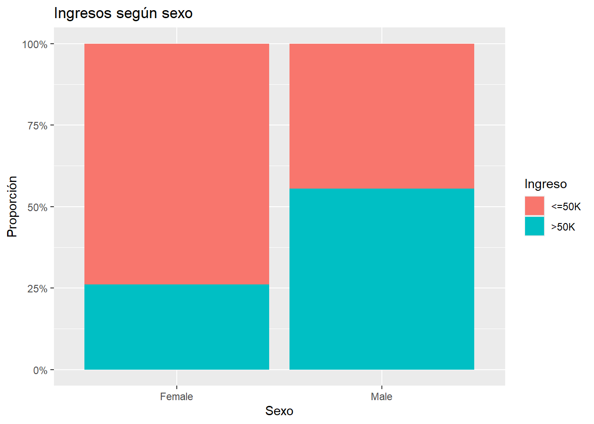
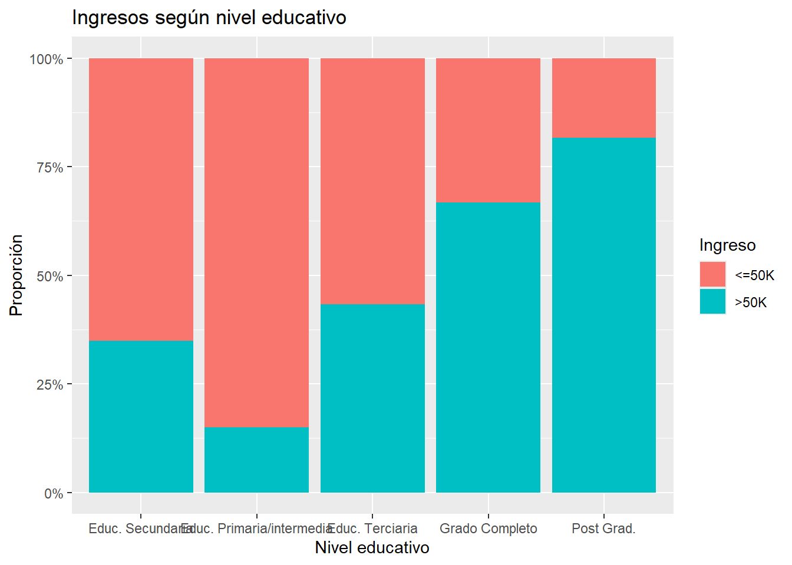
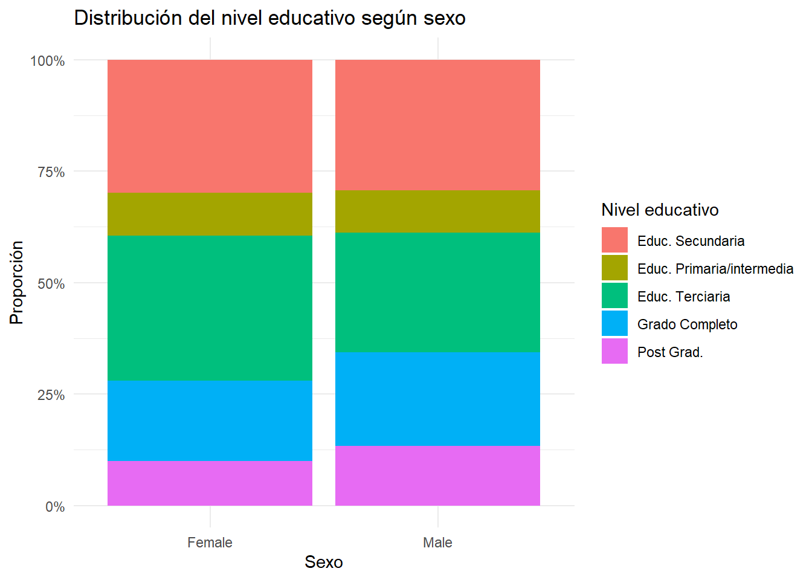
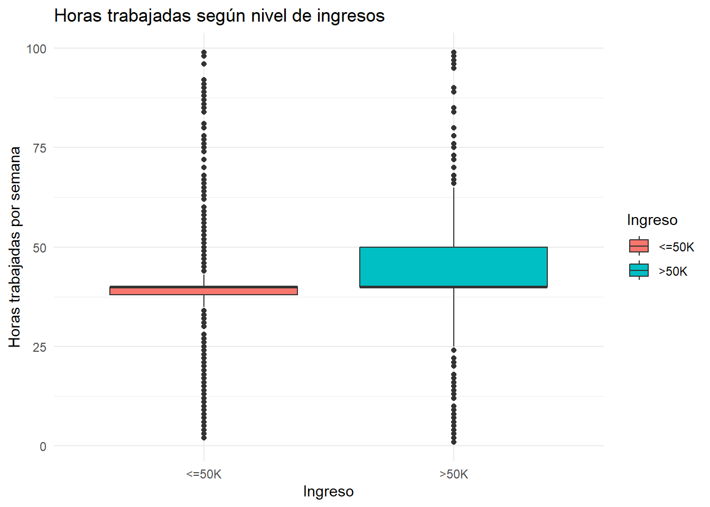
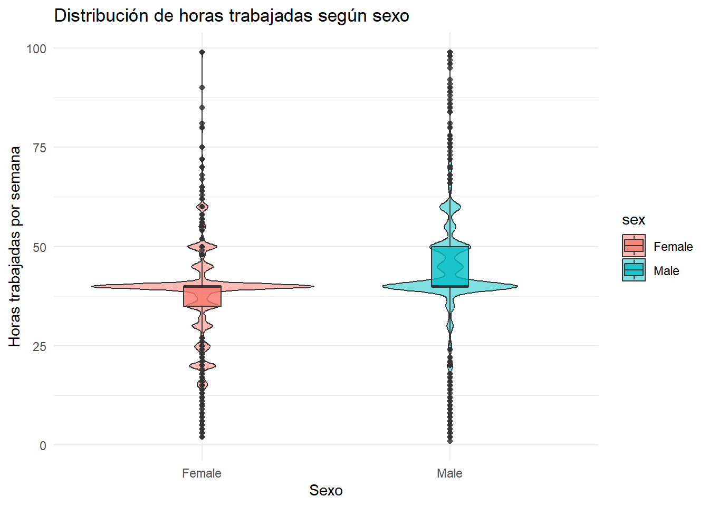
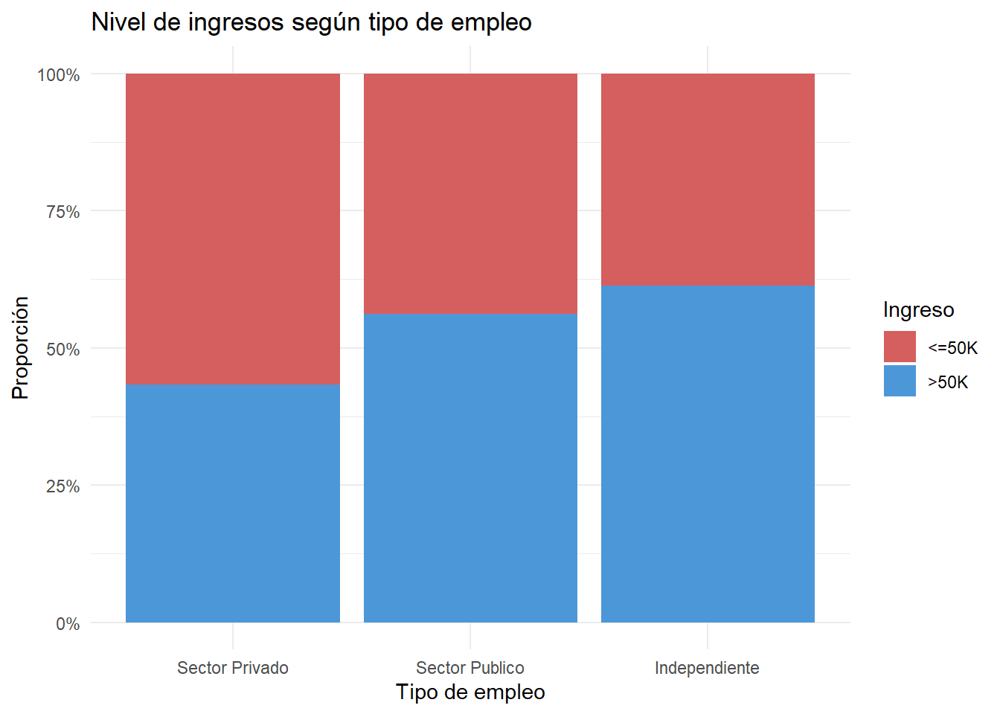

El propósito del presente trabajo es estudiar el efecto de distintas variables en el ingreso, haciendo especial énfasis en la cuestión de la brecha de género; el sexo de la persona determina la propabilidad de que reciba mayores ingresos?
Primero se cargan las librerias necesarias.
::: {.cell}
```{.r .cell-code}
if (!require("pacman")) install.packages("pacman")
Loading required package: pacman
pacman::p_load( tidyverse, # manipulación y gráficos here, # rutas relativas janitor, # limpieza de nombres broom, # tablas de resultados de modelos marginaleffects, # efectos marginales promedio (AME) ggplot2, # gráficos scales, # escalas para gráficos performance, # métricas de modelos patchwork, # combinar gráficos knitr, # tablas kableExtra # tablas más estéticas)message('librerias cargadas')
librerias cargadas
:::
Luego hacemos un primer acercamiento a los datos, abirmos la base y vemos como estan armadas las variables
censo <-read_csv(here("TP 3", "data", "adult_census_USA.csv"))
Rows: 15766 Columns: 14
── Column specification ────────────────────────────────────────────────────────
Delimiter: ","
chr (9): workclass, education, marital_status, occupation, relationship, rac...
dbl (5): age, education_num, capital_gain, capital_loss, hours_per_week
ℹ Use `spec()` to retrieve the full column specification for this data.
ℹ Specify the column types or set `show_col_types = FALSE` to quiet this message.
Ahora factorizamos la variable income para poder extraer el salario “<=50K” como primer nivel y categoría de referencia en la regresión logística.
censo <- censo %>%mutate(income =factor( income,levels =c("<=50K", ">50K") ) )levels(censo$income)
[1] "<=50K" ">50K"
message('variable objetivo cargada')
variable objetivo cargada
Este trabajo buscará analizar el efecto del sexo de la persona en la probabilidad de que tenga ingresos mayores a 50k, controlando e interactuando con otras variables . En primer lugar extraemos las variables relevantes para el modelo. Seleccionamos las variables y luego vemos como están codificadas y si hay que hacerles modificaciones a las variables categoricas para poder incluirlas en el modelo.
datos <- censo %>%select( income, sex, age, education, marital_status, race, workclass, hours_per_week )glimpse(datos) #para ver bien la composicion de las variables y que habria que cambiar
# Recodificación de variables categoricas datos <- datos %>%mutate(# Estado civilmarital_status =case_when( marital_status %in%c("Married-civ-spouse", "Married-AF-spouse") ~"Casado",TRUE~"Soltero" ),# Educacióneducation =case_when( education %in%c("Preschool", "1st-4th", "5th-6th", "7th-8th","9th", "10th", "11th", "12th" ) ~"Educ. Primaria/intermedia", education =="HS-grad"~"Educ. Secundaria", education %in%c("Some-college","Assoc-acdm","Assoc-voc" ) ~"Educ. Terciaria", education =="Bachelors"~"Grado Completo", education %in%c("Masters","Prof-school","Doctorate" ) ~"Post Grad." ),# etniarace =case_when( race =="White"~"Blanco",TRUE~"No Blanco"#al hacer un acercamiento a los datos se observan muy pocas personas no blancas, por lo tanto se agrupan las observaciones. ),# Tipo de empleoworkclass =case_when( workclass =="Private"~"Sector Privado", workclass %in%c("Federal-gov","Local-gov","State-gov" ) ~"Sector Publico", workclass %in%c("Self-emp-inc","Self-emp-not-inc" ) ~"Independiente",TRUE~NA_character_ ) )datos <- datos %>%filter(!is.na(workclass))message('variables predictoras cargadas')
variables predictoras cargadas
Antes de armar el modelo, se delimita la categoria de referencia para cada predictor y se ordena por niveles a las variables categoricas
datos <- datos %>%mutate(sex =factor( sex,levels =c("Female", "Male") #categoria de ref. es FEMALE ),marital_status =factor( marital_status,levels =c("Soltero", "Casado") #cat. de referencia es SOLTERO ),education =factor( education,levels =c("Educ. Secundaria", #cat. de referencia es EDUC.SECUNDARIA "Educ. Primaria/intermedia","Educ. Terciaria","Grado Completo","Post Grad." ) ),race =factor( race,levels =c("Blanco", "No Blanco") #cat. de referencia es BLANCO ),workclass =factor( workclass,levels =c("Sector Privado", #cat. de referencia es SECTOR PRIVADO"Sector Publico","Independiente" ) ) )
Finalmente vamos a verificar que los datos de la variable objetivo esten balanceados.
Podemos observar una distribucion balanceada de observaciones dentro de los clusters de ingreso, un poco mas de la mitad gana menos de 50k.
PARTE 1: Analisis exploratorio y decisiones de transformacion Primer acercamiento: sobre la relacion entre sexo e ingreso
message('creando grafico ingresos - sexo')
creando grafico ingresos - sexo
datos %>%count(sex, income) %>%group_by(sex) %>%mutate(prop = n/sum(n)) %>%ggplot(aes(x = sex,y = prop,fill = income ) ) +geom_col() +scale_y_continuous(labels = scales::percent) +labs(x ="Sexo",y ="Proporción",fill ="Ingreso",title ="Ingresos según sexo" )

Segundo acercamiento: sobre la relacion del nivel educativo y el ingreso
message('creando grafico ingresos - nivel educativo')
creando grafico ingresos - nivel educativo
datos %>%count(education, income) %>%group_by(education) %>%mutate(prop = n/sum(n)) %>%ggplot(aes(x = education,y = prop,fill = income ) ) +geom_col() +scale_y_continuous(labels = scales::percent) +labs(x ="Nivel educativo",y ="Proporción",fill ="Ingreso",title ="Ingresos según nivel educativo" )

Se observa que a mayor nivel educativo, mayor la proporcion de personas con salarios mas altos.
Analizamos la relacion entre nivel educativo y sexo:
message('creando grafico nivel educativo - sexo')
creando grafico nivel educativo - sexo
datos %>%count(sex, education) %>%group_by(sex) %>%mutate(prop = n /sum(n)) %>%ggplot(aes(x = sex,y = prop,fill = education ) ) +geom_col() +scale_y_continuous(labels = scales::percent ) +labs(x ="Sexo",y ="Proporción",fill ="Nivel educativo",title ="Distribución del nivel educativo según sexo" ) +theme_minimal()

Muy parejo, aunque se osberva que hay una mayor proporcion de hombres con nivel educativo mas alto. En conexion a lo visto en los dos graficos anteriores: ser hombre parece asociarse con un mayor nivel educativo y un mayor salario.
Analizamos la relacion entre horas trabajadas y salario:
ggplot( datos,aes(x = income,y = hours_per_week,fill = income )) +geom_boxplot() +labs(x ="Ingreso",y ="Horas trabajadas por semana",fill ="Ingreso",title ="Horas trabajadas según nivel de ingresos" ) +theme_minimal()

Se observa que la media para ambos es 40 horas, pero se destaca que para el 50% de las observaciones de quienes ganan más que 50K rondan entre las 40 y las 50 horas semanales, mientras que quienes ganan menos que 50k el 50% de las observaciones se encuentran más concentradas en 40 horas.
Otra intuicion sobre la explicacion de la brecha salarial entre hombres y mujeres es que los hombres trabajan mas horas semanales mientras que las mujeres, tradicionalmente mas ligadas a tareas de cuidado de la familia, cumplen menos horas semanales y por ende tienen menores salarios. Buscamos explorar la relacion entre horas semanales trabajadas y sexo:
ggplot( datos,aes(x = sex,y = hours_per_week,fill = sex )) +geom_violin(alpha = .5) +geom_boxplot(width = .15,alpha = .8 ) +labs(x ="Sexo",y ="Horas trabajadas por semana",title ="Distribución de horas trabajadas según sexo" ) +theme_minimal()

Este grafico demuestra que la media de horas trabajadas semanalmente para hombres y mujeres es 40 horas, no obstante, se observa que el 50% de las observaciones para las mujeres ronda entre las 40 y las 35 horas semanales mientras que para los hombres estos datos se encuentran ente 40 y 50 horas semanales. Se observan diferencias poco significativas en las horas según género.
Finalmente vamos a observar el efecto del tipo de trabajo en el salario:
message('creando grafico ingresos - tipo de trabajo')
creando grafico ingresos - tipo de trabajo
datos %>%count(workclass, income) %>%group_by(workclass) %>%mutate(prop = n /sum(n)) %>%ggplot(aes(x = workclass,y = prop,fill = income ) ) +geom_col() +scale_fill_manual(values =c("<=50K"="#D55E5E",">50K"="#4C97D8" ) ) +scale_y_continuous(labels = scales::percent ) +labs(x ="Tipo de empleo",y ="Proporción",fill ="Ingreso",title ="Nivel de ingresos según tipo de empleo" ) +theme_minimal()

En base a las visualizaciones llevadas a cabo, se analizara el efecto del sexo, el estado civil, la etnia, la edad, la cantidad de horas trabajadas, el nivel educativo y el tipo de empleo en el salario. Se hara especial enfasis en la cuestion de la brecha del salario por genero, y se incluira una interaccion entre tipo de empleo y genero para comprender si los por un mismo trabajo varia el sueldo segun el sexo de la persona.
Regresiones logisticas con y sin termino interactivo: Regresion sin interaccion: Categorias de referencia: Se estableció a las mujeres como categoría de referencia para la variable sexo. Para estado civil se eligió la categoría “Soltero”. En educación se utilizó “Educación Secundaria” como referencia por tratarse de una categoría intermedia y numerosa dentro de la muestra. Para etnia se seleccionó “Blanco” y para tipo de empleo “Sector Privado”, dado que constituyen las categorías más frecuentes observadas en los datos.
modelo_1 <-glm( income ~ sex + age + education + marital_status + race + workclass + hours_per_week,data = datos,family = binomial)message('modelo 1 creado, sin interaccion')
modelo 1 creado, sin interaccion
modelo_2 <-glm( income ~ sex + age + education + sex*workclass + marital_status + race + workclass + hours_per_week,data = datos,family = binomial)message('modelo 2 creado, con interaccion')
modelo 2 creado, con interaccion
summary(modelo_1)
Call:
glm(formula = income ~ sex + age + education + marital_status +
race + workclass + hours_per_week, family = binomial, data = datos)
Coefficients:
Estimate Std. Error z value Pr(>|z|)
(Intercept) -5.406646 0.135320 -39.955 < 2e-16 ***
sexMale 0.183944 0.054804 3.356 0.00079 ***
age 0.037217 0.001876 19.842 < 2e-16 ***
educationEduc. Primaria/intermedia -1.161104 0.089540 -12.967 < 2e-16 ***
educationEduc. Terciaria 0.631589 0.052922 11.934 < 2e-16 ***
educationGrado Completo 1.666384 0.061194 27.231 < 2e-16 ***
educationPost Grad. 2.285059 0.080048 28.546 < 2e-16 ***
marital_statusCasado 2.351081 0.051120 45.991 < 2e-16 ***
raceNo Blanco -0.199378 0.067310 -2.962 0.00306 **
workclassSector Publico 0.080933 0.060003 1.349 0.17740
workclassIndependiente -0.099112 0.062502 -1.586 0.11280
hours_per_week 0.035139 0.002075 16.935 < 2e-16 ***
---
Signif. codes: 0 '***' 0.001 '**' 0.01 '*' 0.05 '.' 0.1 ' ' 1
(Dispersion parameter for binomial family taken to be 1)
Null deviance: 21815 on 15761 degrees of freedom
Residual deviance: 14109 on 15750 degrees of freedom
AIC: 14133
Number of Fisher Scoring iterations: 5
summary(modelo_2)
Call:
glm(formula = income ~ sex + age + education + sex * workclass +
marital_status + race + workclass + hours_per_week, family = binomial,
data = datos)
Coefficients:
Estimate Std. Error z value Pr(>|z|)
(Intercept) -5.448189 0.137284 -39.686 < 2e-16 ***
sexMale 0.207953 0.062991 3.301 0.000962 ***
age 0.037316 0.001877 19.878 < 2e-16 ***
educationEduc. Primaria/intermedia -1.158583 0.089512 -12.943 < 2e-16 ***
educationEduc. Terciaria 0.627070 0.052957 11.841 < 2e-16 ***
educationGrado Completo 1.665915 0.061221 27.211 < 2e-16 ***
educationPost Grad. 2.292030 0.080289 28.547 < 2e-16 ***
workclassSector Publico -0.014004 0.109025 -0.128 0.897797
workclassIndependiente 0.384283 0.162122 2.370 0.017773 *
marital_statusCasado 2.346259 0.051132 45.886 < 2e-16 ***
raceNo Blanco -0.196641 0.067406 -2.917 0.003531 **
hours_per_week 0.035678 0.002082 17.138 < 2e-16 ***
sexMale:workclassSector Publico 0.141448 0.129626 1.091 0.275185
sexMale:workclassIndependiente -0.559726 0.174801 -3.202 0.001364 **
---
Signif. codes: 0 '***' 0.001 '**' 0.01 '*' 0.05 '.' 0.1 ' ' 1
(Dispersion parameter for binomial family taken to be 1)
Null deviance: 21815 on 15761 degrees of freedom
Residual deviance: 14096 on 15748 degrees of freedom
AIC: 14124
Number of Fisher Scoring iterations: 5
Efectos Marginales Promedio (Cambio en Probabilidad)
Predictor
Contraste
Efecto (Prob)
IC Inferior
IC Superior
Valor p
Interpretación
age
dY/dX
0.54%
0.49%
0.59%
0.0000
Aumenta prob. (Sig.)
education
Educ. Primaria/intermedia - Educ. Secundaria
-17.36%
-19.71%
-15.02%
0.0000
Reduce prob. (Sig.)
education
Educ. Terciaria - Educ. Secundaria
10.32%
8.63%
12%
0.0000
Aumenta prob. (Sig.)
education
Grado Completo - Educ. Secundaria
26.41%
24.62%
28.2%
0.0000
Aumenta prob. (Sig.)
education
Post Grad. - Educ. Secundaria
35.19%
33%
37.38%
0.0000
Aumenta prob. (Sig.)
hours_per_week
dY/dX
0.52%
0.46%
0.58%
0.0000
Aumenta prob. (Sig.)
marital_status
Casado - Soltero
40.72%
39.17%
42.28%
0.0000
Aumenta prob. (Sig.)
race
No Blanco - Blanco
-2.87%
-4.8%
-0.93%
0.0036
Reduce prob. (Sig.)
sex
Male - Female
2.24%
0.64%
3.84%
0.0062
Aumenta prob. (Sig.)
workclass
Independiente - Sector Privado
-0.59%
-2.49%
1.31%
0.5441
No significativo
workclass
Sector Publico - Sector Privado
1.35%
-0.36%
3.06%
0.1212
No significativo
Al observar el efecto marginal promedio, se aprecia que estar casado aumenta la propabilidad de ganar mayores ingresos en 40,7 puntos porcentuales respecto de los individuos solteros, manteniendo constantes las demás variables. Por otro lado, observamos que la educación tiene un efecto significativo sobre el ingreso; frente a la categoría de referencia que es haber completado estudios secundarios, tener una educación terciaria aumenta en 10,32 puntos porcentuales la probabilidad de tener ingresos más altos, mientras que tener un título de grado aumenta en aproximadamente 26,41 puntos porcentuales y finalmenete un posgrado aumenta en aproximadamente 35,19 puntos porcentuales. Ser hombre se asocia con una probabilidad levemente más alta de obtener ingresos más altos, de 2,24 puntos porcentuales, si bien es significativo en base al P valor obtenido, en comparacion al estatus matrimonial y el nivel educativo presenta una probabilidad de aumento menor. Lo mismo ocurre para etnia, no ser blanco se asocia con una probabilidad de -2,87 puntos porcentuales en obtener mayores ingresos frente a la gente blanca, con una significancia estadística alta. El sector parece no ser significativo por si solo, no se presentan cambios con significancia estadística.
Ahora calculamos los log odds:
# Forest plot de Odds Ratios del Modelo 2message('Creando forest plot con log odds')
Este grafico nos permite aceverar que el sexo si tiene un efecto en la probabilidad de pertenecer al grupo de mayores ingresos, por un 23%. Otros resultados que se destacan: los individuos no blancos presentan odds aproximadamente 18% menores de pertenecer al grupo de ingresos altos que los individuos blancos, y se sostiene la preponderancia de estar casado y tener un mayor nivel educativo en la probabilidad de tener mayores ingresos como fue visto en el dataframe con los efectos marginales promedio.
La interaccion incluida nos permite comprender que la brecha de genero esta fuertemente relacionada con el sector laboral. Los resultados muestran que, manteniendo constantes el resto de las variables incluidas en el modelo, los hombres presentan mayores chances de pertenecer al grupo de ingresos altos respecto de las mujeres (OR = 1,23). Sin embargo, el término de interacción correspondiente a Hombre × Independiente presenta un Odds Ratio menor a uno (OR = 0,57) y resulta estadísticamente significativo, indicando que el efecto positivo asociado al sexo masculino disminuye de manera significativa entre los trabajadores independientes en comparación con quienes se desempeñan en el sector privado, categoría de referencia.
La comparación entre modelos muestra que la incorporación de la interacción entre sexo y tipo de empleo mejora el ajuste del modelo. El Modelo 2 presenta un menor valor de AIC (14124 frente a 14133) y un pseudo-R² ligeramente superior (0.3538 frente a 0.3533). Si bien la mejora en el pseudo-R² es moderada, la reducción del AIC sugiere que la mayor complejidad del modelo se encuentra justificada por una mejor capacidad explicativa. Por este motivo, el Modelo 2 es seleccionado como especificación final para el análisis. Asimismo, uno de los términos de interacción (Hombre × Independiente) resulta estadísticamente significativo, sugiriendo que el efecto del sexo sobre los ingresos varía según el tipo de empleo. En consecuencia, se considera que la inclusión de la interacción aporta información relevante y mejora el desempeño general del modelo, por lo que el Modelo 2 es seleccionado como especificación final.